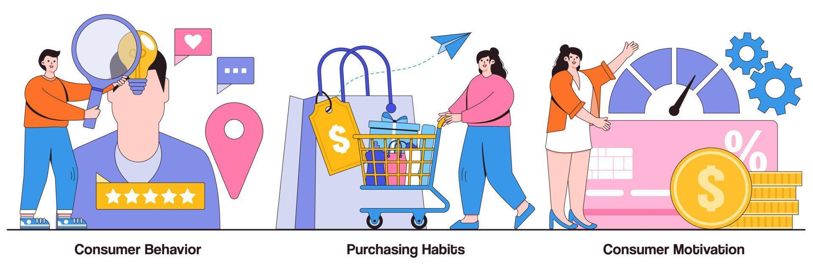

A complete end-to-end data analytics project analyzing customer shopping patterns using Python, SQL Server, and Power BI.
The project covers data loading, EDA, cleaning, SQL analysis, dashboard creation, insight reporting, and final presentation using Gamma.

Excel for Data Analytics. An assessment project submitted during a training by Interswitch Group for the Job Shadowing 2.0 programme.
This project showcases practical data analytics skills using Microsoft Excel to clean, analyze, and interpret HR workforce data. The analysis focuses on answering real-world business questions related to employee distribution, salary structure, performance evaluation, and workforce tenure.
The project demonstrates proficiency in data cleaning, Excel functions, business analysis, and insight generation, making it relevant for Data Analyst, HR Analyst, and Business Analyst roles.
 requires login
requires login
This is an End-to-End Data Project in Databricks. The project covers data loading, EDA, cleaning, SQL analysis, dashboard creation, insight reporting, and final presentation using Gamma.

Data Exploration of Covid 19 Dataset in SQL Server
Complete Data Analyst Project with end-to-end SQL Data Analysis of Zepto E-commerce Inventory data using SQL Server.